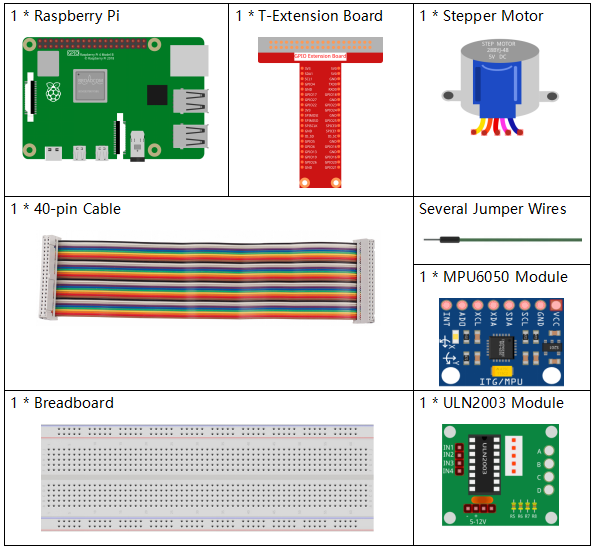

Note
Bonjour et bienvenue dans la communauté des passionnés de SunFounder Raspberry Pi, Arduino et ESP32 sur Facebook ! Plongez dans l’univers de Raspberry Pi, Arduino et ESP32 avec d’autres passionnés.
Pourquoi nous rejoindre ?
Support d’experts : Résolvez les problèmes après-vente et relevez vos défis techniques grâce à l’aide de notre communauté et de notre équipe.
Apprenez et Partagez : Échangez des astuces et des tutoriels pour perfectionner vos compétences.
Aperçus exclusifs : Bénéficiez d’un accès anticipé aux nouvelles annonces de produits et aux avant-premières.
Réductions spéciales : Profitez de réductions exclusives sur nos nouveaux produits.
Promotions festives et concours : Participez à des concours et à des promotions lors des fêtes.
👉 Prêt à explorer et à créer avec nous ? Cliquez sur [Ici] et rejoignez-nous dès aujourd’hui !
3.1.6 Contrôle de Mouvement
Introduction
Dans cette leçon, nous allons créer un dispositif simple de détection et de contrôle de mouvement. Le MPU6050 est utilisé comme capteur, et le moteur pas-à -pas est utilisé comme dispositif de contrôle. Avec le MPU6050 monté sur un gant, vous pouvez contrôler le moteur pas-à -pas en tournant votre poignet.
Composants
Schéma de câblage
T-Board Name |
physical |
wiringPi |
BCM |
GPIO18 |
Pin 12 |
1 |
18 |
GPIO23 |
Pin 16 |
4 |
23 |
GPIO24 |
Pin 18 |
5 |
24 |
GPIO25 |
Pin 22 |
6 |
25 |
SDA1 |
Pin 3 |
||
SCL1 |
Pin 5 |

Procédures expérimentales
Étape 1 : Construisez le circuit.

Étape 2 : Accédez au dossier du code.
cd ~/davinci-kit-for-raspberry-pi/c/3.1.6/
Étape 3 : Compilez le code.
gcc 3.1.6_MotionControl.c -lwiringPi -lm
Étape 4 : Exécutez le fichier exécutable.
sudo ./a.out
Lorsque le code est lancé, si l’angle d’inclinaison du mpu6050 sur l’axe Y-axis supérieur à 45 °, le moteur pas-à -pas tourne dans le sens inverse des aiguilles d’une montre ; s’il est inférieur à -45 °, le moteur tourne dans le sens des aiguilles d’une montre.
Note
Si cela ne fonctionne pas après l’exécution, ou s’il y a un message d’erreur indiquant : « wiringPi.h : Aucun fichier ou répertoire de ce type », veuillez consulter C code is not working?.
Explication du Code
double mpu6050(){
    acclX = read_word_2c(0x3B);
    acclY = read_word_2c(0x3D);
    acclZ = read_word_2c(0x3F);
    acclX_scaled = acclX / 16384.0;
    acclY_scaled = acclY / 16384.0;
    acclZ_scaled = acclZ / 16384.0;
    double angle=get_y_rotation(acclX_scaled, acclY_scaled, acclZ_scaled);
    return angle;
}
mpu6050 récupère l’angle d’inclinaison dans la direction de l’axe Y.
void rotary(char direction){
    if(direction == 'c'){
        for(int j=0;j<4;j++){
            for(int i=0;i<4;i++)
                {digitalWrite(motorPin[i],0x99>>j & (0x08>>i));}
delayMicroseconds(stepSpeed);
}
}
    else if(direction =='a'){
        for(int j=0;j<4;j++){
            for(int i=0;i<4;i++)
                {digitalWrite(motorPin[i],0x99<<j & (0x80>>i));}
delayMicroseconds(stepSpeed);
}
}
}
Si la direction reçue est c, le moteur pas-à -pas tourne dans le sens des aiguilles d’une montre ; si la direction est a, le moteur tourne dans le sens inverse. Consultez 1.3.3 Stepper Motor pour plus de détails sur le calcul de la direction de rotation du moteur pas-à -pas.
int main()
{
setup();
    double angle;
    while(1) {
        angle = mpu6050();
        if (angle >=45){rotary('a');}
        else if (angle<=-45){rotary('c');}
}
    return 0;
}
L’angle d’inclinaison dans la direction de l’axe Y est lu depuis mpu6050. Si l’angle est supérieur à 45°, le moteur pas-à -pas tourne dans le sens inverse des aiguilles d’une montre ; s’il est inférieur à -45°, le moteur tourne dans le sens des aiguilles d’une montre.